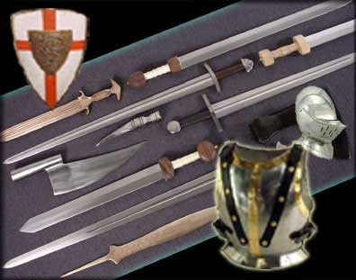

| Τα όπλα του ιππότη  Επειδή στα μεσαιωνικά χρόνια οι μάχες δίνονταν σώμα με σώμα, οι ιππότες προστάτευαν το σώμα τους με βαριά μεταλλική πανοπλία, περικεφαλαία και ασπίδα, πάνω στην οποία ζωγράφιζαν το θυρεό, το οικόσημο της οικογένειάς τους. Το πλατύ ξίφος και η μακριά λόγχη συμπλήρωναν τον οπλισμό τους. |
||